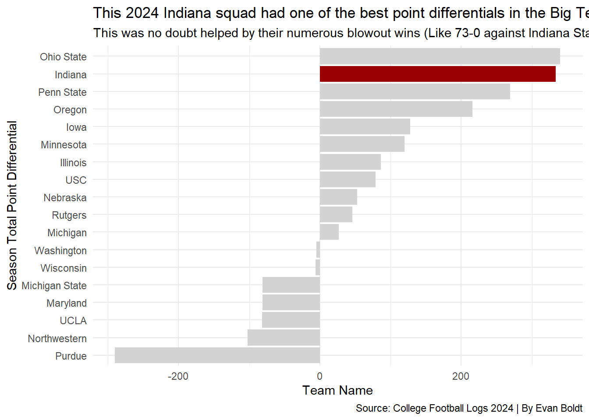
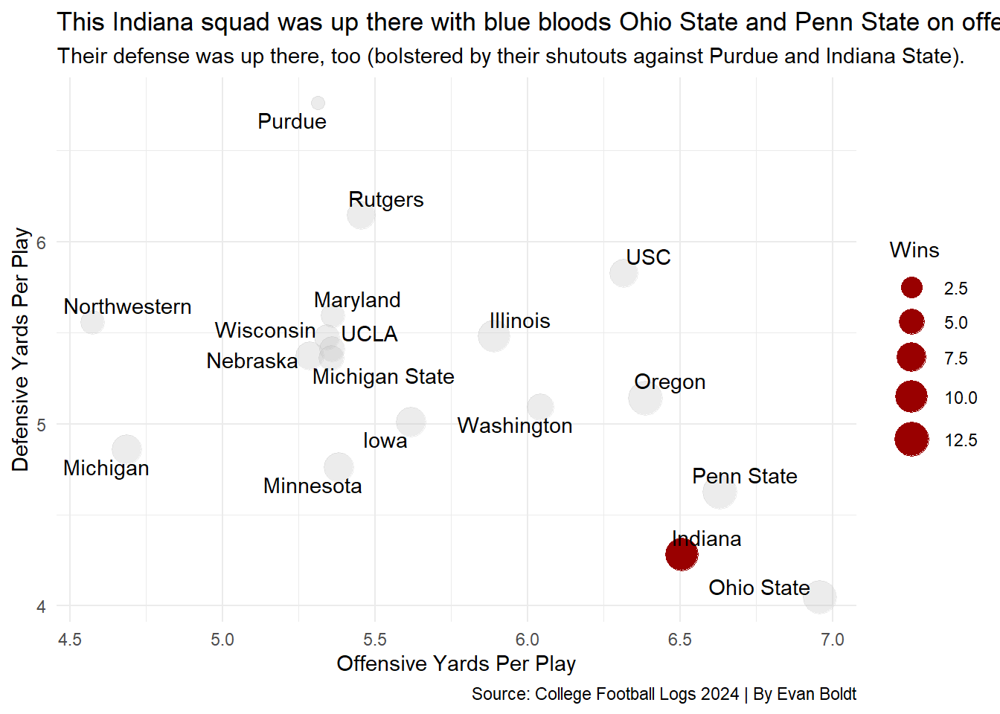
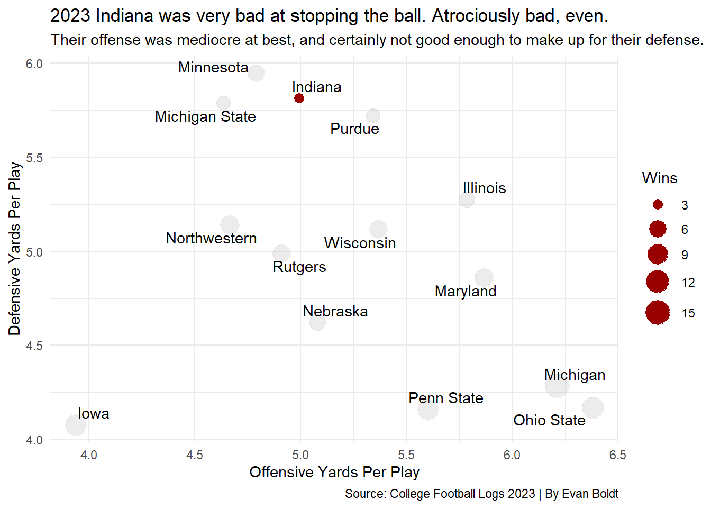
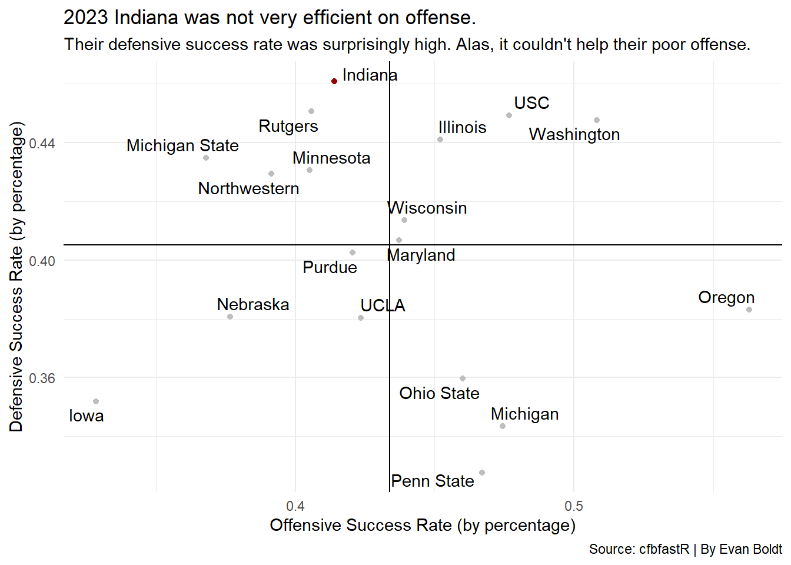
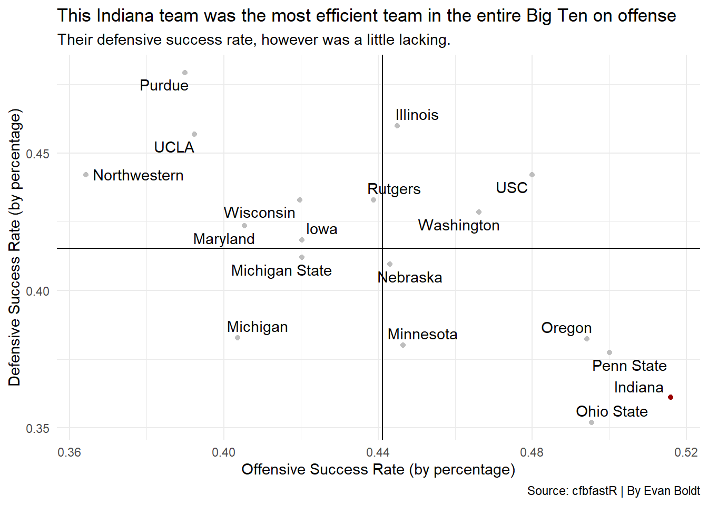

Code
library(tidyverse)
library(patchwork)
library(cfbfastR)
library(ggrepel)Evan Boldt
November 4, 2025
If you went back in time two years ago and told the average college football fan that Indiana football would be one of the best teams in the Big Ten, nay, arguably THE best team in the country, let alone the Big Ten, you would be laughed out of whatever sports bar you had time traveled to.
And yet, here in 2025, Indiana football is ranked no. 2, is undefeated, and is perhaps one of the scariest teams in all of college football since 2019 LSU (And I’ll stand by that take).
So the question is: how? How did IU football, known for being perennially mediocre and having (as of August 2025) the second worst all-time win-loss record in all of FBS, become so good so fast?
The answer is Curt Cignetti.
Since he stepped foot in Bloomington for the 2024 season, Coach Cignetti has established himself as an all-gas, no-brakes, boot-on-the-throat-of-your-enemy type of coach. The common narrative surrounding this Indiana team is by how many points they beat other teams by. So let’s take a look at the Hoosiers’ point differential under Cignetti last season compared to the rest of the Big Ten.
BigTen24 <- read_csv("footballlogs24.csv")|>
filter(Conference == "Big Ten Conference")
BigTen23 <- read_csv("footballlogs23.csv")|>
filter(Conference == "Big Ten Conference")
BigDiff24 <- read_csv("footballlogs24.csv")|>
filter(Conference == "Big Ten Conference")|>
mutate(point_diff = TeamScore - OpponentScore)|>
group_by(Team)|>
summarize(season_diff = sum(point_diff))
BigDiff23 <- read_csv("footballlogs23.csv")|>
filter(Conference == "Big Ten Conference")|>
mutate(point_diff = TeamScore - OpponentScore)|>
group_by(Team)|>
summarize(season_diff = sum(point_diff))
iudiff24<- BigDiff24 |> filter(Team == "Indiana")
iudiff23<- BigDiff23 |> filter(Team == "Indiana")
bar24 <- ggplot()+
geom_bar(data = BigDiff24, aes(x=reorder(Team, season_diff), weight=season_diff), fill="lightgrey")+
geom_bar(data=iudiff24, aes(x=reorder(Team, season_diff), weight=season_diff), fill = "#990000") + theme_minimal() + coord_flip()+
labs(
x="Season Total Point Differential",
y="Team Name",
title="This 2024 Indiana squad had one of the best point differentials in the Big Ten",
subtitle="This was no doubt helped by their numerous blowout wins (Like 73-0 against Indiana State).",
caption="Source: College Football Logs 2024 | By Evan Boldt"
)
bar23 <- ggplot()+
geom_bar(data = BigDiff23, aes(x=reorder(Team, season_diff), weight=season_diff),fill="lightgrey") +
geom_bar(data=iudiff23, aes(x=reorder(Team, season_diff), weight=season_diff), fill = "#990000")+ theme_minimal() + coord_flip()+
labs(
x="Season Total Point Differential",
y="Team Name",
title="The answer is bad. This Indiana team didn't score very much and got scored on a lot.",
subtitle="This was one of the worst Power 5 teams in 2023.",
caption="Source: College Football Logs 2023 | By Evan Boldt"
)
bar24
Pretty good, all things considered. That puts the season point differential of 2024’s IU - in Cignetti’s first year no less - right behind the Ohio State team that would go on to win it all.
Now, how does Cignetti’s team in his first season with Indiana compare to the Hoosiers in the season prior?
Which makes sense, since that 2023 Indiana team went 1-8 in the Big Ten and 3-9 overall. Not a great football team. For reference, the 2023 team with the highest point differential in the Big Ten (Michigan) would go on to win the National Championship, just like the following year, so clearly this point differential thing translates to winning football games.
So what witchcraft did Curt Cignetti perform to elevate a 3-9, second-worst point differential team to an 11-2, second-best point differential College Football Playoff contender?
We know that the Hoosiers were able to score a whole lot more than their opponents. They were also one of the most prolific teams at moving and stopping the ball in 2024.
BigWL24 <- BigTen24|>
mutate(wins = case_when(
grepl("W", Outcome) ~ 1,
grepl("L", Outcome) ~ 0))
BigYPP24 <- BigWL24 |>
group_by(Team, Conference) |>
summarise(
TotalPlays = sum(OffensivePlays),
TotalYards = sum(OffensiveYards),
DefensivePlays = sum(DefPlays),
DefensiveYards = sum(DefYards),
TotalWins = sum(wins)) |>
mutate(
OffensiveYPP = TotalYards/TotalPlays,
DefensiveYPP = DefensiveYards/DefensivePlays)
IUYPP24 <- BigYPP24 |> filter(Team == "Indiana")
ggplot() +
geom_point(
data=BigYPP24,
aes(x=OffensiveYPP, y=DefensiveYPP, size=TotalWins),
color="grey",
alpha=.3) +
geom_point(
data=IUYPP24,
aes(x=OffensiveYPP, y=DefensiveYPP, size=TotalWins),
color="#990000")+
scale_size(range = c(3,8), name="Wins")+
geom_text_repel(data = BigYPP24, aes(x=OffensiveYPP, y=DefensiveYPP, label = Team))+
theme_minimal()+
labs(
x="Offensive Yards Per Play",
y="Defensive Yards Per Play",
title="This Indiana squad was up there with blue bloods Ohio State and Penn State on offense.",
subtitle="Their defense was up there, too (bolstered by their shutouts against Purdue and Indiana State).",
caption="Source: College Football Logs 2024 | By Evan Boldt"
)
Now, let’s take a look at the state of things 2023, a.k.a. 1 B.C. (Before Cignetti). How were they at moving/stopping the ball?
BigWL23 <- BigTen23|>
mutate(wins = case_when(
grepl("W", Outcome) ~ 1,
grepl("L", Outcome) ~ 0))
BigYPP23 <- BigWL23 |>
group_by(Team, Conference) |>
summarise(
TotalPlays = sum(OffensivePlays),
TotalYards = sum(OffensiveYards),
DefensivePlays = sum(DefPlays),
DefensiveYards = sum(DefYards),
TotalWins = sum(wins)) |>
mutate(
OffensiveYPP = TotalYards/TotalPlays,
DefensiveYPP = DefensiveYards/DefensivePlays)
IUYPP23 <- BigYPP23 |> filter(Team == "Indiana")
ggplot() +
geom_point(
data=BigYPP23,
aes(x=OffensiveYPP, y=DefensiveYPP, size=TotalWins),
color="grey",
alpha=.3) +
geom_point(
data=IUYPP23,
aes(x=OffensiveYPP, y=DefensiveYPP, size=TotalWins),
color="#990000")+
scale_size(range = c(3,8), name="Wins")+
geom_text_repel(data = BigYPP23, aes(x=OffensiveYPP, y=DefensiveYPP, label = Team))+
theme_minimal()+
labs(
x="Offensive Yards Per Play",
y="Defensive Yards Per Play",
title="2023 Indiana was very bad at stopping the ball. Atrociously bad, even.",
subtitle="Their offense was mediocre at best, and certainly not good enough to make up for their defense.",
caption="Source: College Football Logs 2023 | By Evan Boldt"
)
At this point, you’re probably thinking “Evan, we get it, Indiana was really bad before Cignetti. What is your point?”
My point is that the real difference between IU of old and IU of the modern day can be attributed primarily to how Cignetti’s team executes on both offense and defense. This can be quantified by a little stat called Success Rate.
On offense, success rate is found by dividing the number of successful plays by the total number of plays. A play on offense is considered successful if the offense gains a certain percentage of yards needed for a first down. So, an offensive success would be at least 40%-50% of yards needed on first down, 60% on second down, and 100% on a third or fourth down. What is defensive success rate? The inverse, or total offensive failures divided by total plays.
Now with the long-winded explanation out of the way, what was 2023 Indiana’s offense and defensive success rate?
StatsAdv23 <- cfbd_stats_season_advanced(2023)
StatsAdv24 <- cfbd_stats_season_advanced(2024)
BigAdv23 <- StatsAdv23 |>
filter(conference == "Big Ten")|>
group_by(team, conference)
BigAdv24 <- StatsAdv24 |>
filter(conference == "Big Ten")|>
group_by(team, conference)
iuAdv23<-BigAdv23|>
filter(team == "Indiana")
iuAdv24<-BigAdv24|>
filter(team == "Indiana")
BigAdv23|>
ungroup()|>
summarise(offense23 = mean(off_success_rate), defense23 = mean(def_success_rate))# A tibble: 1 × 2
offense23 defense23
<dbl> <dbl>
1 0.434 0.405# A tibble: 1 × 2
offense24 defense24
<dbl> <dbl>
1 0.441 0.415ggplot()+
geom_point(data=BigAdv23, aes(x=off_success_rate, y=def_success_rate), color="grey")+
geom_point(data=iuAdv23, aes(x=off_success_rate, y=def_success_rate), color="#990000")+
geom_vline(xintercept = 0.4339536)+
geom_hline(yintercept = 0.4052588)+
geom_text_repel(data=BigAdv23, aes(x=off_success_rate, y=def_success_rate, label = team))+
theme_minimal()+
labs(
x="Offensive Success Rate (by percentage)",
y="Defensive Success Rate (by percentage)",
title="2023 Indiana was not very efficient on offense.",
subtitle="Their defensive success rate was surprisingly high. Alas, it couldn't help their poor offense.",
caption="Source: cfbfastR | By Evan Boldt"
)
Now let’s compare that with 2024’s Indiana.
ggplot()+
geom_point(data=BigAdv24, aes(x=off_success_rate, y=def_success_rate), color="grey")+
geom_point(data=iuAdv24, aes(x=off_success_rate, y=def_success_rate), color="#990000")+
geom_vline(xintercept = 0.4411546)+
geom_hline(yintercept = 0.4152041)+
geom_text_repel(data=BigAdv24, aes(x=off_success_rate, y=def_success_rate, label = team))+
theme_minimal()+
labs(
x="Offensive Success Rate (by percentage)",
y="Defensive Success Rate (by percentage)",
title="This Indiana team was the most efficient team in the entire Big Ten on offense",
subtitle="Their defensive success rate, however was a little lacking.",
caption="Source: cfbfastR | By Evan Boldt"
)
Ultimately, defense is what cost that 2024 IU squad in the long run, being unable stop the offenses of the highest echelons of college football. But their newfound offensive prowess was and still remains the main narrative surrounding Curt Cignetti’s team andtheir unprecedented improvement from 2023.
Now, in 2025, he’s hungry for more, and we’ll have to see if that high-powered offense can finally be paired with a rock solid defense.